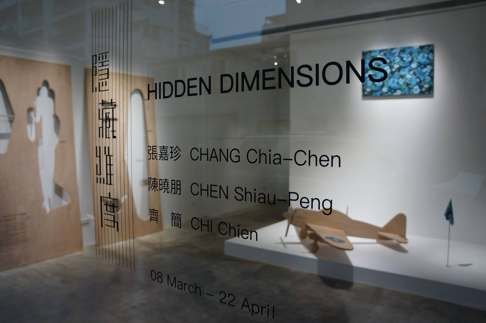
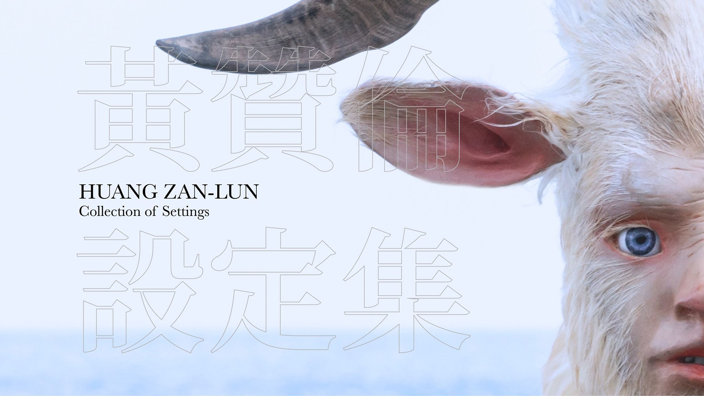
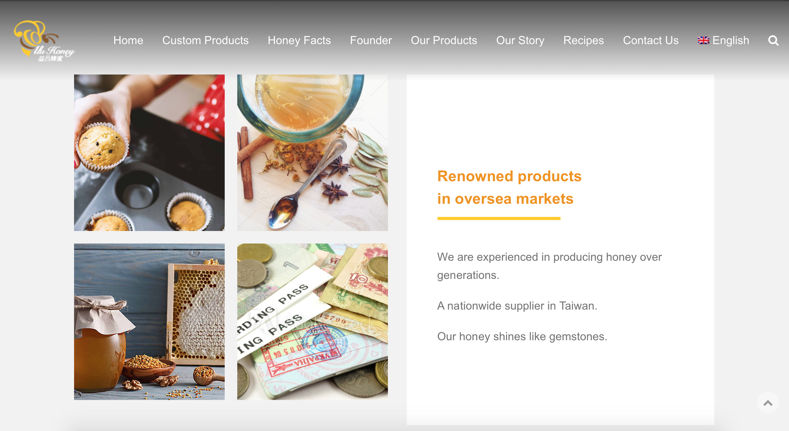
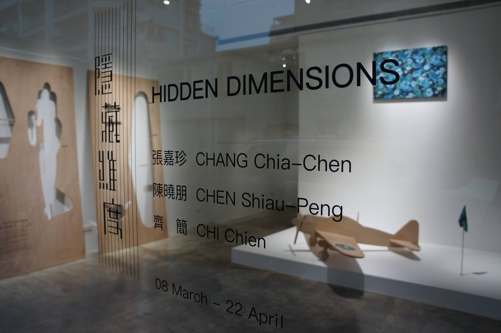
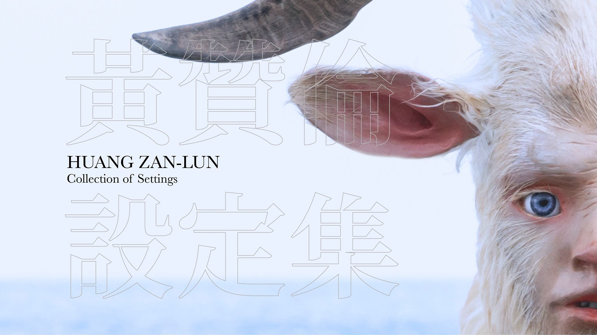
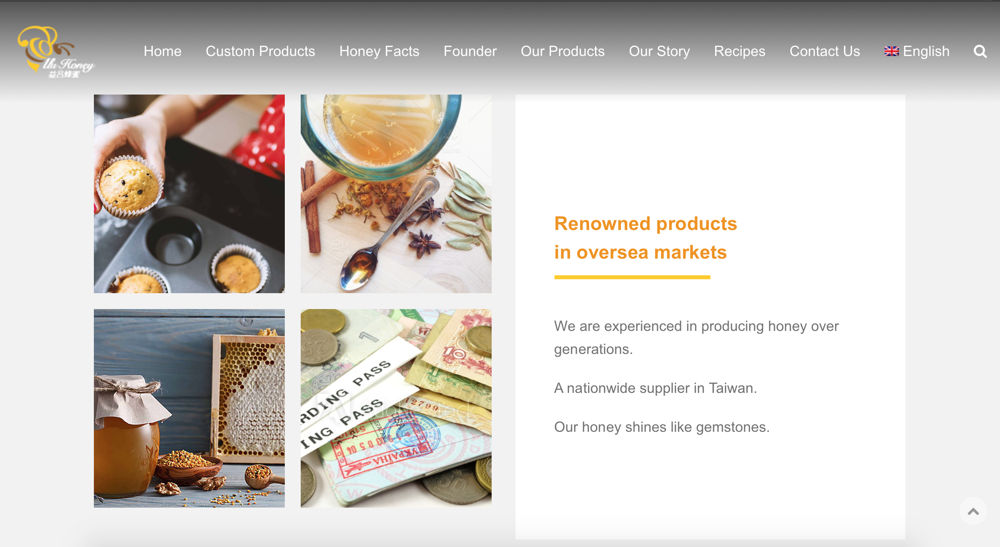
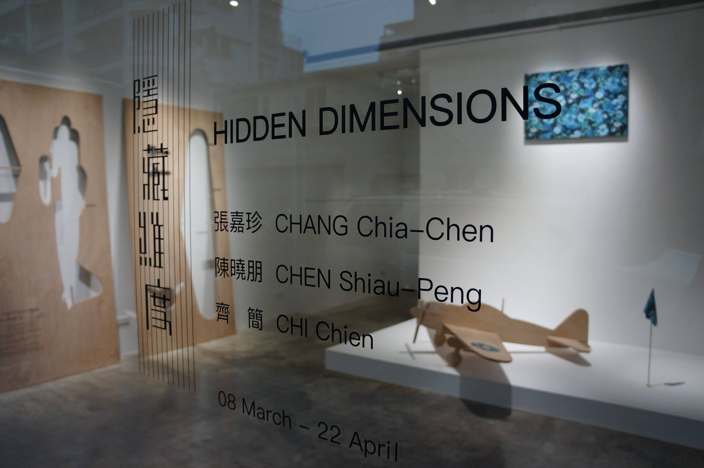
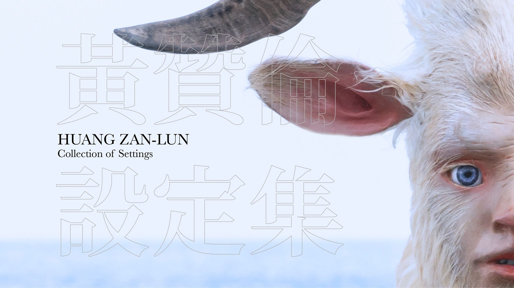
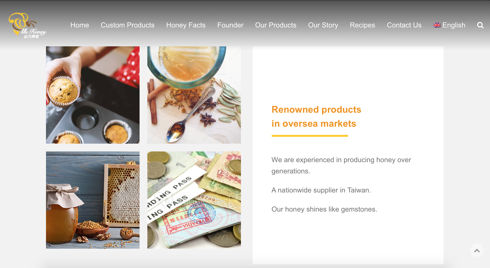

Freelance English/Chinese translator and interpreter specialising in art, culture, and marketing.
Based in Taiwan.
Rye Lin completed her first translation work in the summer of 2015. It was a literature/photobook written and made by a Taiwanese photographer. Rye began to work as a parttime translator since then.
In the last year of her university life, she enrolled in the exchange program organised by her university and studied at the Australian National University for a semester, and she went on to work in a law firm in Sydney as an education agent.
After formally graduating from National Taiwan Normal University, Rye Lin spent most of her time working across Taipei, Taichung, Sydney, and Hong Kong. She’s now a freelance translator and interpreter specialising in arts, culture, architecture, and marketing campaigns. Rye Lin works with English, Mandarin, and Cantonese, and her team is composed of Japanese and Korean translators/interpreters working across the island.
Due to her personal preference, Rye Lin’s major clients are from the arts sector, including Art Taipei, National Taiwan University of Arts, Ink Global (Hong Kong), and numerous domestic and international curators, artists, art critics, and art galleries. Aside from these, she also offers her translation service to a wide variety of organisations in the technology, finance, machinery, construction, and skincare industries, such as Garmin and Ever Rich Duty-Free Shops. Prestigious universities like National Taiwan University are also her clients.
M.A. in Translation and Interpretation, National Taiwan University
B.A. in English, National Taiwan Normal University


